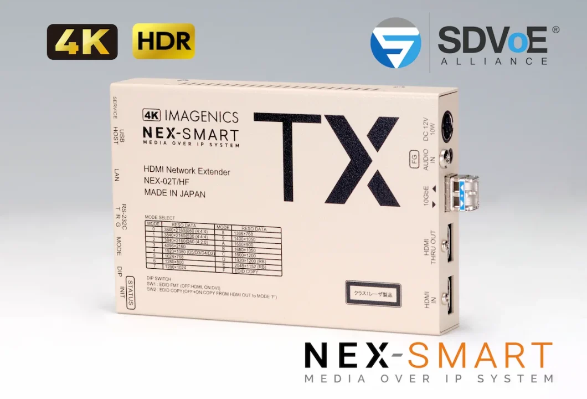

何を送る？
映像形式と、キーボード・マウスなどの操作信号が必要かを整理。
映像をつなぐ・整える ↗EQUIPMENT / 28
HDMIの光・ネットワーク伝送
離れた画面へ、PCの映像と必要な操作信号を届ける。
KEY SPECIFICATIONS

画像を大きく見る ＋01 / ROLE & FLOW
実際の配線・端子構成は案件に合わせて決めます。
02 / BEFORE YOUR BRIEF
映像形式と、キーボード・マウスなどの操作信号が必要かを整理。
距離、光ケーブルの種類と経路、途中の接続点を共有。
送り先の数と切り替え方から、受信器やネットワーク構成を合わせる。
03 / CHOOSING THE RIGHT TOOL
操作席のPCから離れた画面へHDMI映像を送り、対応するUSB操作信号も延長したい場合に。複数の送り先を扱う場合は、NEX-SMARTの構成として検討します。
HFは光伝送型の区分で、HF-Sはシングルモード、HF-Mはマルチモードのモデルです。HF-Sの最長10kmは、指定OS1光ケーブル等の条件での値です。USBはHIDクラス相当の対応で、任意のUSB機器を延長できるわけではありません。
HDCP 1.4/2.2に対応しますが、保護を解除する機器ではなく、接続先の対応確認が必要です。光接続はデュプレックスLC、指定シングルモードケーブルを使用します。SFP+モジュールは本体に装着されており、他製品のモジュールへ交換しません。ACアダプター等はメーカー付属品です。受信器・光ケーブルの範囲はお見積りに明記します。多分配やマトリックスには、対応する制御機器・ソフトと推奨10GbEスイッチ等を合わせます。手配時には末尾Sを含む型式と送受の組み合わせを確認します。
入力の解像度とフレームレート、送信元と受信先、画面数、距離と光経路、USB操作の要否、制御・設定の範囲をお聞かせください。本体・周辺機材・搬入出・設営・本番操作・撤去を分けて、必要な範囲を整理します。